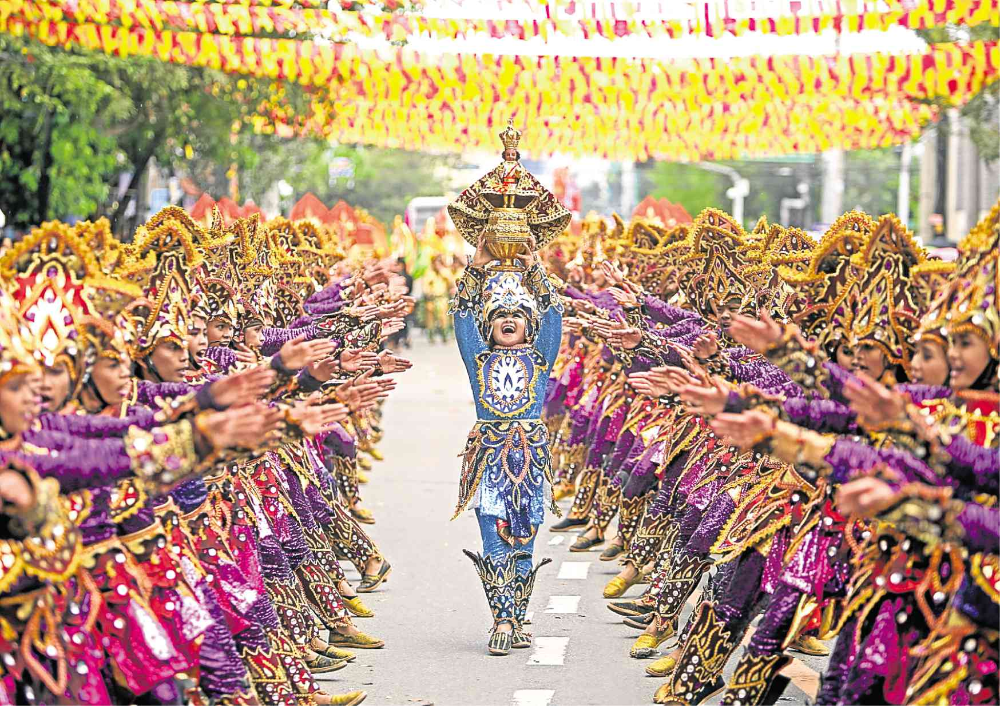
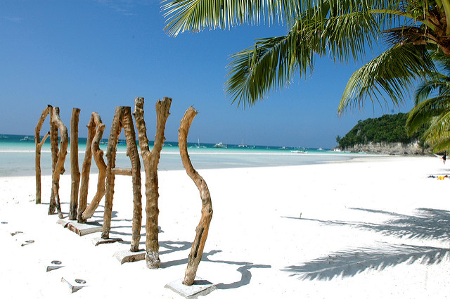

Sinulog! Isyagit og Kusog!
By Jona
The streets surrounding Basilica del Sto. Niño were the venues of varied characters.
A Westerner megaphoned “Don’t believe in any gods. Believe in Jesus!” while a woman held a placard “Wag maniwala sa diyusan-diyusan!” A man in his 20s eyed the camera and held the replica of Sto. Niño high to be photographed. A candle vendor with Lucien Freud kind of wrinkles scanned the place for possible buyers.
A woman’s green dress matched with the Sto. Niño’s she was holding.
Struggling in a current of devotees and revelers, it was a futile attempt to pass through the entrance gate. Mama, our youngest—Yanyan, and I followed a choo-choo train of people while Ate and her husband and their three kids were fortunate to enter the basilica. The mass, they say, is for the kids. Akira was fast asleep, Zeki wore a baffled face, and Zac was excited with the crowd.
Sinulog was a carnival of colors. The grand parade was like a palette smudged with all possible colors one can think of. It somehow reminded me of Pico Iyer’s Cuba and Argentina.
The photographers armed with foot-long lenses interjected each contender. An Indian photographer managed to capture photographs with a carrier-ed kid on his back and another one on his chest.
A Western woman assayed to make a festival queen relaxed with the many cameras pointed at her. A dancer complained that the paint used on their face was not a body paint, which consequently made their eyes itchy and reddish like an aswang’s about to divorce from its lower body.
A festival queen threw a fit by silently sitting amid the road. Her unmoving position—staged or not—was a delight for the photographers. She had an innocent beauty and she frequently cast a casual glance at Sto. Niño, which was pressed against her chest. With her eyes covered by her fake long lashes, the gentle angling of her head was quite dramatic.
Tired from hours of dancing and walking, some dancers had the whole stretch of the street for a resting place.
By my workplace, the revelers’ slight headbangs accompanied the dancers’ sharp motility.
The body became the medium of prayers: the feet elaborately moved with the beat, the hands swayed in one direction, and the mouth excitedly crooned “Sinulog! Ha! I-syagit og kusog! Ha! Pit Senyor! Pit Senyor! Tanan magsaulog!”
Top 5 Islands to Visit in Philippines
By Michael
The Philippines is the second largest archipelago nations and has over 7,000 islands. This stunning country has something for everyone, whether you are a backpacker, luxury traveler or somewhere in between.
There is so much to do on every island you visit from great snorkeling and diving, to cave exploration, to mesmerizing sunsets, and of course the powdery white sand beaches.
With so many islands to choose from, where does one even begin to start when planning an island hoping trip to this gorgeous part of the world?
We are helping you out by breaking down our favorite Philippines islands.

BORACAY
This island has been often titles “the best island in the world” and for very good reason. The long stretches of powdery white beaches are one of the many highlights of this beautiful island. You will also find some of the Philippines best cuisine in Boracay. This small island stretches only 7 kilometers in length but what it lacks is size is definitely makes up for in beauty.
CEBU
Cebu is the most densely populated island of the Philippines and is rich in history. As well as the incredible beaches that the island if known for, Cebu has so much to offer. The waterfalls in Cebu are breathtaking and well worth a visit. This is the most visited island in the Philippines with 35% of tourists choosing Cebu as their tropical getaway.
BOHOL
Bohol is located in the central portion of the Visayas lying between Cebu and Leyte. The most popular attraction in Bohol is by far the Chocolate Hills. The island consists of more than 1200 hills that are inform in shape and that look like giant mole hills. You will also find the worlds smallest monkey here in Bohol, the Tarsier. There is also opulent marine life which makes this island the perfect diving vacation.
PALAWAN
Palawan’s exceptional land and seascapes make it a first-rate cultural, adventure and nature destination. This stunning island is known for its picturesque emerald waters, beautiful green jungles and gorgeous landscapes. It is often voted one of the worlds most beautiful islands and for good reason. It is usually recommended to spend at least a full week exploring Palawan, so you can see all the major attractions but still have some time to also chill at the beach or your resort.
SIQUIJOR
This mystical island is known for folklore of witchcraft and age-old legends. But don’t let that scare you off because the island is a scenic paradise with its stunning waterfalls, beautiful diving areas and alluring blue water. This tiny island packs a punch when it comes to beauty and adventure. Or perhaps you might be more inclined to relax on the beach with cocktail in hand for the duration of your trip to Siquijor,
No matter which islands you choose, one of the best ways to experience the Philippines is with an experienced tour company. They can build you a customized tour package for your unique vacation needs. We recommend PhilippinesTravelPackage.com as your go to vacation experts for all things Philippines